奇怪龍強度 10
奇怪龍強度 10關卡
依輪次查看八個關卡的敵人、強度與通關後解鎖背景。
ROUND 01
第一輪
奇怪龍強度 10 轟龍強度 16
轟龍強度 16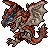
火龍強度 23 泡狐龍強度 42
泡狐龍強度 42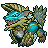
雷狼龍強度 44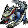
白疾風迅龍強度 65轟龍強度 75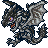
火龍(稀少種)強度 90ROUND 02
第二輪
 迅龍(亞種)強度 15
迅龍(亞種)強度 15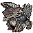
雷狼龍(亞種)強度 18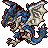
火龍(亞種)強度 30 迅龍強度 48
迅龍強度 48 金雷公雷狼龍強度 75
金雷公雷狼龍強度 75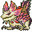
天眼泡狐龍強度 135ROUND 03
第三輪
 奇怪龍(亞種)強度 18
奇怪龍(亞種)強度 18 金獅子強度 21
金獅子強度 21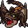
轟龍(亞種)強度 38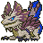
首領泡狐龍強度 55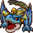
荒鉤爪轟龍強度 60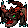
轟龍(稀少種)強度 90 黑蝕龍強度 100
黑蝕龍強度 100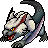
迅龍(稀少種)強度 150ROUND 04
第四輪
第一關—
第二關—
第三關—
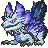
泡狐龍(稀少種)強度 60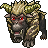
激昂金獅子強度 80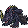
混沌黑蝕龍強度 200ROUND 05
第五輪
第一關—
第二關—
第三關—
第四關—
第五關—
第六關—
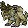
天迴龍強度 170 黑炎王火龍強度 200
黑炎王火龍強度 200UNLOCK
通關背景
 通關解鎖
通關解鎖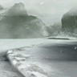
通關解鎖 通關解鎖
通關解鎖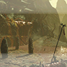
通關解鎖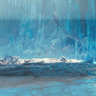
通關解鎖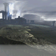
通關解鎖 通關解鎖
通關解鎖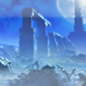
通關解鎖